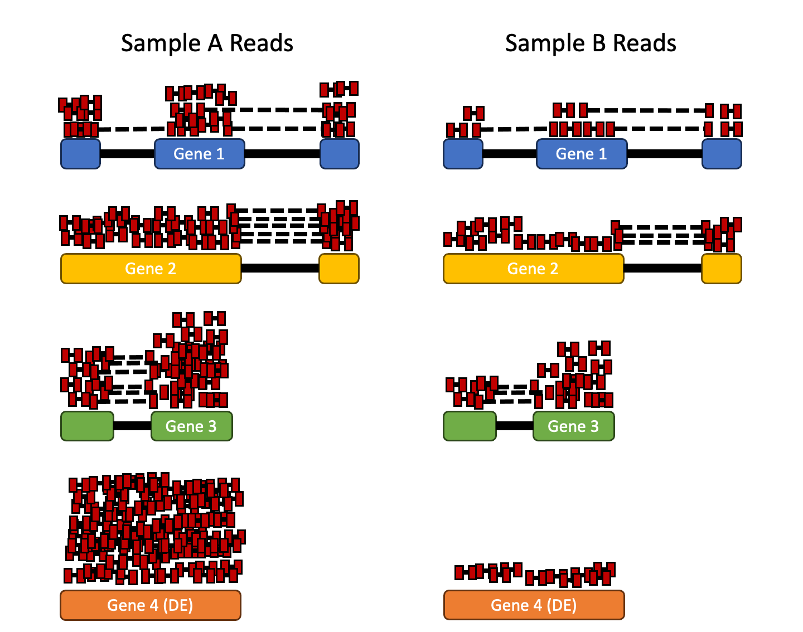

Count normalization with DESeq2
Normalization
Last updated: {{ git_revision_date_localized }}
!!! note “Section Overview”
🕰 **Time Estimation:** 40 minutes
💬 **Learning Objectives:**
1. Explore different types of normalization methods
2. Become familiar with the `DESeqDataSet` object
3. Understand how to normalize counts using DESeq2The first step in the DE analysis workflow is count normalization, which is necessary to make accurate comparisons of gene expression between samples.
The counts of mapped reads for each gene is proportional to the expression of RNA (“interesting”) in addition to many other factors (“uninteresting”). Normalization is the process of scaling raw count values to account for the “uninteresting” factors. In this way the expression levels are more comparable between and/or within samples.
The main factors often considered during normalization are:
- Sequencing depth: Accounting for sequencing depth is necessary for comparison of gene expression between samples. In the example below, each gene appears to have doubled in expression in Sample A relative to Sample B, however this is a consequence of Sample A having double the sequencing depth.

!!! note
In the figure above, each red rectangle represents a read aligned to a gene. Reads connected by dashed lines connect a read spanning an intron.- Gene length: Accounting for gene length is necessary for comparing expression between different genes within the same sample. In the example, Gene 2 and Gene 3 have similar levels of expression, but the number of reads mapped to Gene 2 would be many more than the number mapped to Gene 3 because Gene 2 is longer.

GC-content: Genomic features such as GC-content may result in a read count biases, as GC-rich and GC-poor fragments are under-represented in RNAseq experiments. This under-representation is attributed to the fact that fragments with high and low GC-content are not adequately amplified in a standard high throughput sequencing protocol and, subsequently, that the fragments are difficult to align (correctly) to reference genome, i.e. less unique, repeat regions, etc. (Benjamini & Speed, 2012 and Risso et al, 2011).
RNA composition: A few highly differentially expressed genes between samples, differences in the number of genes expressed between samples, or presence of contamination can skew some types of normalization methods. Accounting for RNA composition is recommended for accurate comparison of expression between samples, and is particularly important when performing differential expression analyses Anders & Huber, 2010.
In the example, if we were to divide each sample by the total number of counts to normalize, the counts would be greatly skewed by the DE gene, which takes up most of the counts for Sample A, but not Sample B. Most other genes for Sample A would be divided by the larger number of total counts and appear to be less expressed than those same genes in Sample B.

!!! tip
While normalization is essential for differential expression analyses, it is also necessary for exploratory data analysis, visualization of data, and whenever you are exploring or comparing counts between or within samples.Common normalization methods
Several common normalization methods exist to account for these differences:
{{ read_table(‘./assets/normalization_methods.tsv’) }}
RPKM/FPKM (not recommended)
While TPM and RPKM/FPKM normalization methods both account for sequencing depth and gene length, RPKM/FPKM are not recommended. The reason is that the normalized count values output by the RPKM/FPKM method are not comparable between samples.
Using RPKM/FPKM normalization, the total number of RPKM/FPKM normalized counts for each sample will be different. Therefore, you cannot compare the normalized counts for each gene equally between samples.
RPKM-normalized counts table
| gene | sampleA | sampleB |
|---|---|---|
| XCR1 | 5.5 | 5.5 |
| WASHC1 | 73.4 | 21.8 |
| … | … | … |
| Total RPKM-normalized counts | 1,000,000 | 1,500,000 |
For example, in the table above, SampleA has a greater proportion of counts associated with XCR1 (5.5/1,000,000) than does sampleB (5.5/1,500,000) even though the RPKM count values are the same. Therefore, we cannot directly compare the counts for XCR1 (or any other gene) between sampleA and sampleB because the total number of normalized counts are different between samples.
DESeq2-normalized counts: Median of ratios method
Since tools for differential expression analysis are comparing the counts between sample groups for the same gene, gene length does not need to be accounted for by the tool. However, sequencing depth and RNA composition do need to be taken into account.
To normalize for sequencing depth and RNA composition, DESeq2 uses the median of ratios method. On the user-end there is only one step, but on the back-end there are multiple steps involved, as described below.
!!! note Note on the DESeq2 workflow
The steps below describe in detail some of the steps performed by DESeq2 when you run a single function to get DE genes. Basically, for a typical RNA-seq analysis, **you would not run these steps individually**.Step 1: creates a pseudo-reference sample (row-wise geometric mean)
For each gene, a pseudo-reference sample is created that is equal to the geometric mean across all samples.
| gene | sampleA | sampleB | pseudo-reference sample |
|---|---|---|---|
| EF2A | 1489 | 906 | sqrt(1489 * 906) = 1161.5 |
| ABCD1 | 22 | 13 | sqrt(22 * 13) = 17.7 |
| … | … | … | … |
Step 2: calculates ratio of each sample to the reference
For every gene in a sample, the ratios (sample/ref) are calculated (as shown below). This is performed for each sample in the dataset. Since the majority of genes are not differentially expressed, the majority of genes in each sample should have similar ratios within the sample.
| gene | sampleA | sampleB | pseudo-reference sample | ratio of sampleA/ref | ratio of sampleB/ref |
|---|---|---|---|---|---|
| EF2A | 1489 | 906 | 1161.5 | 1489/1161.5 = 1.28 | 906/1161.5 = 0.78 |
| ABCD1 | 22 | 13 | 16.9 | 22/16.9 = 1.30 | 13/16.9 = 0.77 |
| MEFV | 793 | 410 | 570.2 | 793/570.2 = 1.39 | 410/570.2 = 0.72 |
| BAG1 | 76 | 42 | 56.5 | 76/56.5 = 1.35 | 42/56.5 = 0.74 |
| MOV10 | 521 | 1196 | 883.7 | 521/883.7 = 0.590 | 1196/883.7 = 1.35 |
| … | … | … | … |
Step 3: calculate the normalization factor for each sample (size factor)
The median value (column-wise for the above table) of all ratios for a given sample is taken as the normalization factor (size factor) for that sample, as calculated below. Notice that the differentially expressed genes should not affect the median value:
normalization_factor_sampleA <- median(c(1.28, 1.3, 1.39, 1.35, 0.59))
normalization_factor_sampleB <- median(c(0.78, 0.77, 0.72, 0.74, 1.35))
The figure below illustrates the median value for the distribution of all gene ratios for a single sample (frequency is on the y-axis).

The median of ratios method assumes that not ALL genes are differentially expressed; therefore, the normalization factors should account for sequencing depth and RNA composition of the sample (large outlier genes will not represent the median ratio values). This method is robust to imbalance in up-/down-regulation and large numbers of differentially expressed genes.
!!! warning
Usually, these size factors are around 1, if you see large variations between samples it is important to take note since it might indicate the presence of extreme outliers.Step 4: calculate the normalized count values using the normalization factor
This is performed by dividing each raw count value in a given sample by that sample’s normalization factor to generate normalized count values. This is performed for all count values (every gene in every sample). For example, if the median ratio for SampleA was 1.3 and the median ratio for SampleB was 0.77, you could calculate normalized counts as follows:
SampleA median ratio = 1.3
SampleB median ratio = 0.77
Raw Counts
| gene | sampleA | sampleB |
|---|---|---|
| EF2A | 1489 | 906 |
| ABCD1 | 22 | 13 |
| … | … | … |
Normalized Counts
| gene | sampleA | sampleB |
|---|---|---|
| EF2A | 1489 / 1.3 = 1145.39 | 906 / 0.77 = 1176.62 |
| ABCD1 | 22 / 1.3 = 16.92 | 13 / 0.77 = 16.88 |
| … | … | … |
!!! warning
Please note that normalized count values are not whole numbers.!!! question “Exercise 1”
Determine the normalized (median of ratios) counts for your gene of interest, PD1, given the raw counts and size factors below.
NOTE: You will need to run the code below to generate the raw counts dataframe (PD1) and the size factor vector (size_factors), then use these objects to determine the normalized counts values:
::: {.cell layout-align="center"}
```{.r .cell-code}
# Raw counts for PD1
PD1 <- t(c(21, 58, 17, 97, 83, 10)) %>%
as_tibble() %>%
rename_all(~paste0("Sample", 1:6))
# Size factors for each sample
size_factors <- c(1.32, 0.70, 1.04, 1.27, 1.11, 0.85)
```
:::??? question “Solution to Exercise 1”
Let's check first what is PD1
::: {.cell layout-align="center"}
```{.r .cell-code}
PD1
```
:::
Since we have the size factors per sample, we only need to divide our PD1 counts by the size factors!
::: {.cell layout-align="center"}
```{.r .cell-code}
PD1/size_factors
```
:::Count normalization of the Vampirium dataset using DESeq2
Now that we know the theory of count normalization, we will normalize the counts for the Vampirium dataset using DESeq2. This requires a few steps:
- Ensure the row names of the metadata dataframe are present and in the same order as the column names of the counts dataframe.
- Create a
DESeqDataSetobject - Generate the normalized counts
1. Match the metadata and counts data
We should always make sure that we have sample names that match between the two files, and that the samples are in the right order. DESeq2 will output an error if this is not the case. Since we built our txi object from our metadata, everything should be OK.
### Check that sample names match in both files
all(colnames(txi$counts) %in% meta$sample)
all(colnames(txi$counts) == meta$sample)If your data did not match, you could use the match() function to rearrange them to be matching. match() function will take two arguments and find in which order the indexes of the second argument match the first argument.
a <- c("a","b","c")
b <- c("b","c","a")
reorder <- match(a,b)
reorder
b[reorder]!!! question “Exercise 2”
Suppose we had sample names matching in the txi object and metadata file, but they were out of order. Write the line(s) of code required make the `meta_random` dataframe with rows ordered such that they were identical to the column names of the `txi`.
::: {.cell layout-align="center"}
```{.r .cell-code}
# randomize metadata rownames
meta_random <- meta[sample(1:nrow(meta)),]
```
:::??? question “Solution to Exercise 2”
Let's check now meta_random order:
::: {.cell layout-align="center"}
```{.r .cell-code}
meta_random
```
:::
We can see that it is all scrambled. We want the rows of `meta_random` to be the same order as the columns of the `txi@counts` object (which is not, as you can see below):
::: {.cell layout-align="center"}
```{.r .cell-code}
### Check that sample names match in both files
all(colnames(txi$counts) %in% meta_random$sample) # are all samples in our metadata?
all(colnames(txi$counts) == meta_random$sample) # are all samples in the same order?
```
:::
Let's use the match function. First we find the order that `meta_random$sample` should be to match the columns of `txi@counts`:
::: {.cell layout-align="center"}
```{.r .cell-code}
reorder <- match(colnames(txi$counts),meta_random$sample)
reorder
```
:::
Finally, we change the order of the rows of meta_random:
::: {.cell layout-align="center"}
```{.r .cell-code}
meta_random <- meta_random[reorder,]
meta_random
```
:::
And confirm:
::: {.cell layout-align="center"}
```{.r .cell-code}
all(colnames(txi$counts) == meta_random$sample) # are all samples in the same order?
```
:::2. Create DESEq2 object
Bioconductor software packages often define and use a custom class within R for storing data (input data, intermediate data and also results). These custom data structures are similar to lists in that they can contain multiple different data types/structures within them. But, unlike lists they have pre-specified data slots, which hold specific types/classes of data. The data stored in these pre-specified slots can be accessed by using specific package-defined functions.
Let’s start by creating the DESeqDataSet object, and then we can talk a bit more about what is stored inside it. To create the object, we will need the txi object and the metadata table as input (colData argument). We will also need to specify a design formula. The design formula specifies which column(s) of our metadata we want to use for statistical testing and modeling (more about that later!). For our dataset we only have one column we are interested in, which is condition. This column has three factor levels, which tells DESeq2 that for each gene we want to evaluate gene expression change with respect to these different levels.
It is very important to establish beforehand which sample type will be our “base” or “reference” level. If nothing is changed, DESeq2 will assume that our reference samples will be the first sample type (in alphabetical order). You can check this using the factor() function.
factor(meta$condition)While in a normal experiment we would use control samples as our reference, in our case we are interested in both checking the differences between control vs. vampirium and garlicum vs. vampirium. Thus, it would be much more convinient to reorganize our factor base level to vampirium. We can do this also with the factor() function, using the levels = argument.
meta$condition = factor(meta$condition, levels = c("vampirium", "control", "garlicum"))
factor(meta$condition)We can see now that vampirium is the first factor! Meaning that it will be interpreted by DESeq as our reference sample type.
Our count matrix input is stored in the txi list object. So we need to specify that using the DESeqDataSetFromTximport() function, which will extract the counts component and round the values to the nearest whole number.
# colData argument requires rownames in order to assess matching sample names
# meta is a tibble object from tidyverse, so we neeed to add rownames.
# If you do not do this and the samples do not match, you will add wrong info!
dds <- DESeqDataSetFromTximport(txi,
colData = meta %>% column_to_rownames("sample"),
design = ~ condition)??? note “Control is not reference level warning”
The warning from the chunk before is telling us that we have setup our vampirium samples as reference, instead of control! This is exactly what we wanted.??? note “Starting from a traditional count matrix”
If you did not create pseudocounts, but a count matrix from aligned BAM files and tools such as `featurecounts`, you would want to use the `DESeqDataSetFromMatrix()` function.
::: {.cell layout-align="center"}
```{.r .cell-code}
## DO NOT RUN!
## Create DESeq2Dataset object from traditional count matrix
dds <- DESeqDataSetFromMatrix(countData = "../Data/Vampirium_counts_traditional.tsv",
colData = meta %>% column_to_rownames("sample"),
design = ~ condition)
```
:::You can use DESeq-specific functions to access the different slots and retrieve information, if you wish. For example, suppose we wanted the original count matrix we would use counts() (Note: we nested it within the View() function so that rather than getting printed in the console we can see it in the script editor) :
View(counts(dds))As we go through the workflow we will use the relevant functions to check what information gets stored inside our object.
You can use DESeq-specific functions to access the different slots and retrieve information, if you wish. For example, suppose we wanted the original count matrix we would use counts():
head(counts(dds))As we go through the workflow we will use the relevant functions to check what information gets stored inside our object.
Pre-filtering
While it is not necessary to pre-filter low count genes before running the DESeq2 functions, there are two reasons which make pre-filtering useful:
- By removing rows in which there are very few reads, we reduce the memory size of the dds data object, and we increase the speed of the transformation and testing functions within DESeq2.
- It can also improve visualizations, as features with no information for differential expression are not plotted.
Here we perform a minimal pre-filtering to keep only rows that have at least 10 reads total.
keep <- rowSums(counts(dds)) >= 10
dds <- dds[keep,]3. Generate the normalized counts
The next step is to normalize the count data in order to be able to make fair gene comparisons between samples.
To perform the median of ratios method of normalization, DESeq2 has a single estimateSizeFactors() function that will generate size factors for us. We will use the function in the example below, but in a typical RNA-seq analysis this step is automatically performed by the DESeq() function, which we will see later.
dds <- estimateSizeFactors(dds)By assigning the results back to the dds object we are filling in the slots of the DESeqDataSet object with the appropriate information. We can take a look at the normalization factor applied to each sample using:
sizeFactors(dds)Now, to retrieve the normalized counts matrix from dds, we use the counts() function and add the argument normalized=TRUE.
normalized_counts <- counts(dds, normalized=TRUE)We can save this normalized data matrix to file for later use:
write.table(normalized_counts, file="/work/Intro_to_bulkRNAseq/Results/normalized_counts.txt", sep="\t", quote=F)!!! warning
DESeq2 doesn't actually use normalized counts, rather it uses the raw counts and models the normalization inside the Generalized Linear Model (GLM). These normalized counts will be useful for downstream visualization of results, but cannot be used as input to DESeq2 or any other tools that perform differential expression analysis which use the negative binomial model.This lesson was originally developed by members of the teaching team (Mary Piper, Meeta Mistry, Radhika Khetani) at the Harvard Chan Bioinformatics Core (HBC).